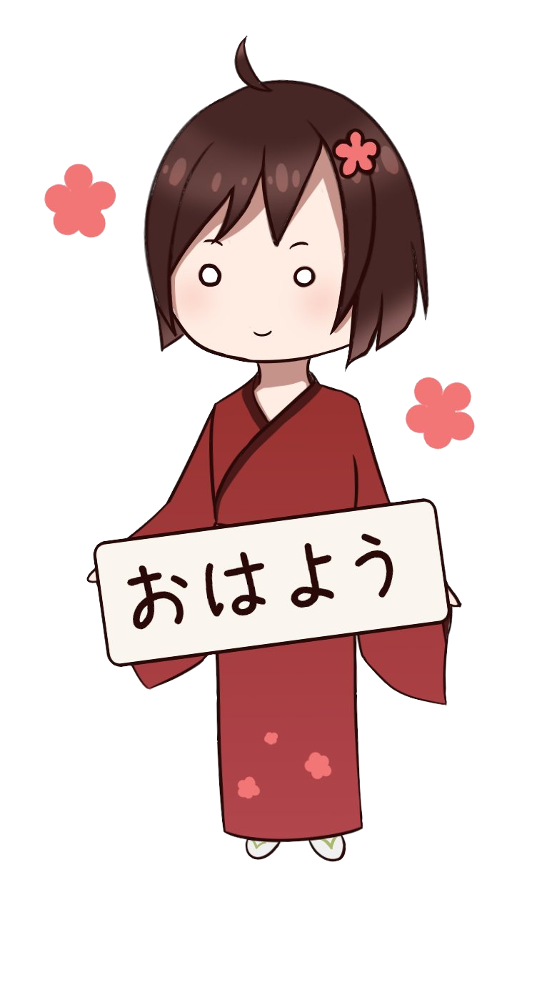
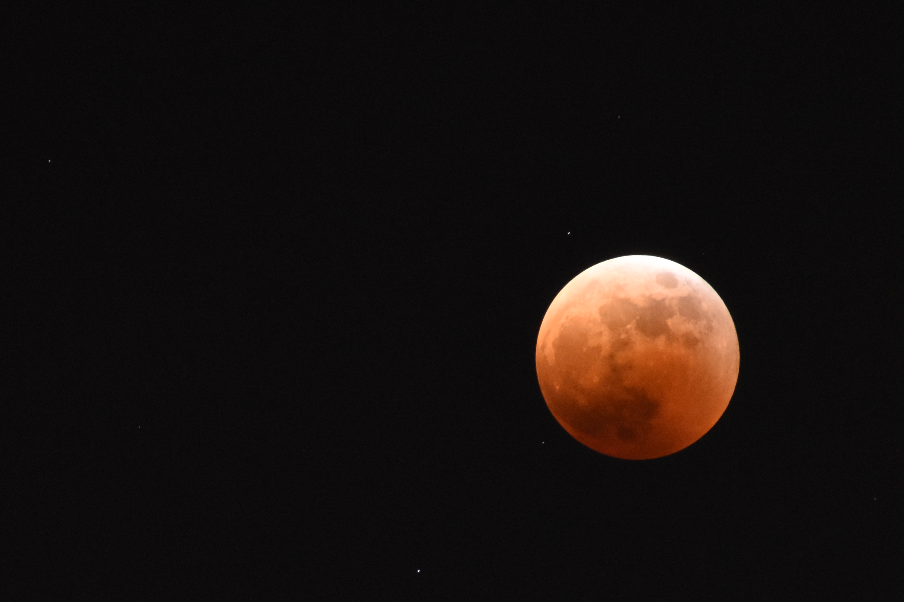
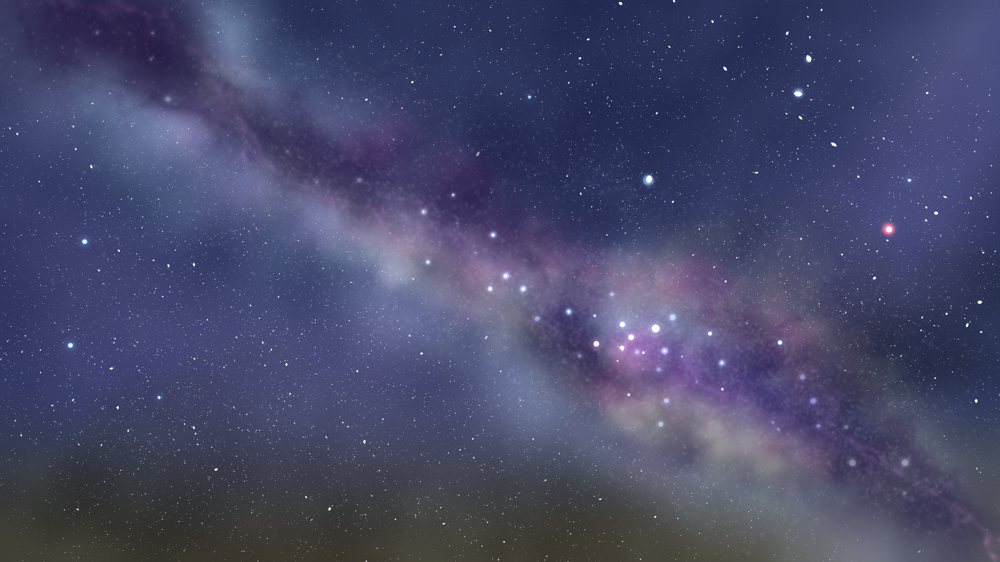
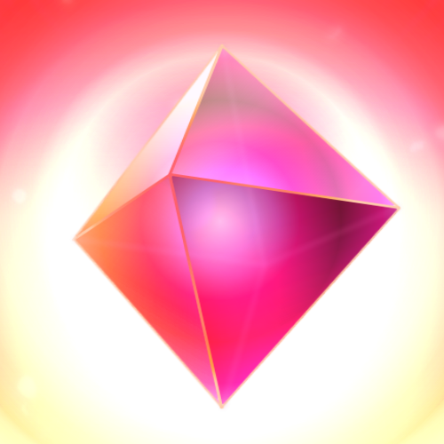
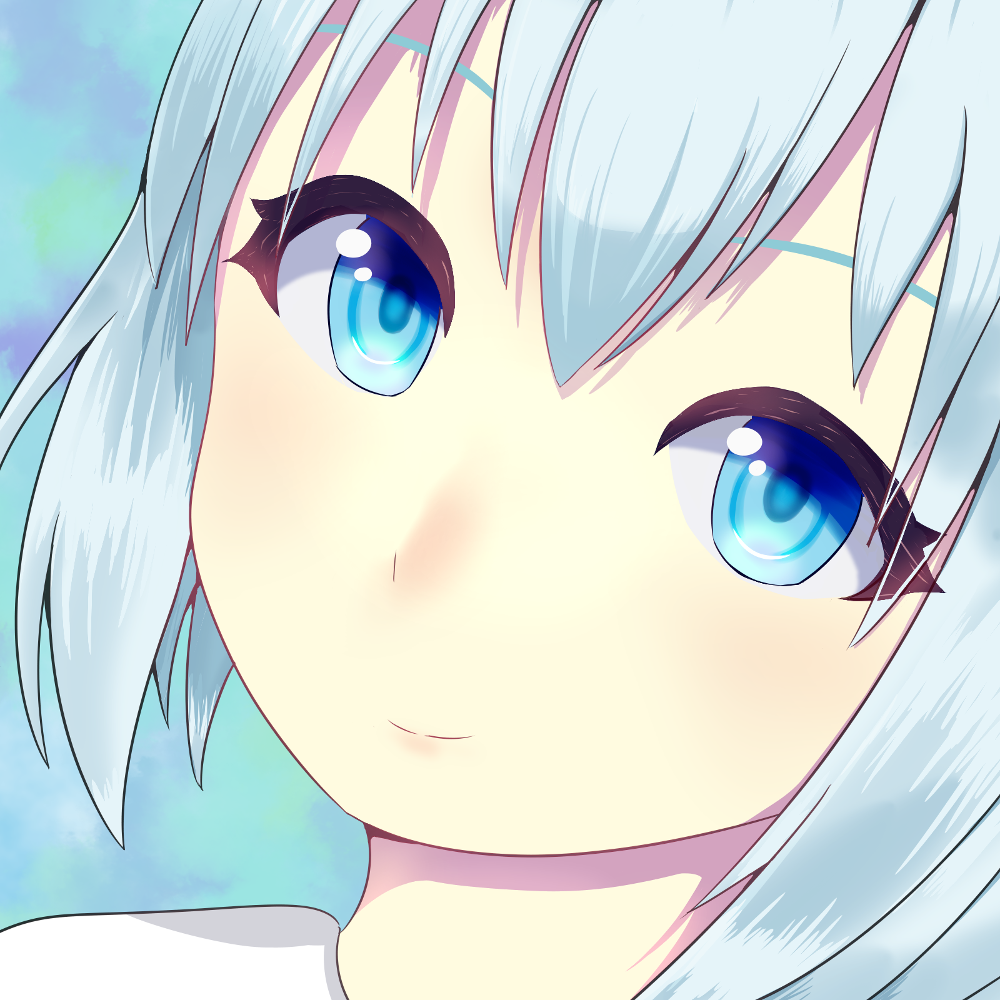
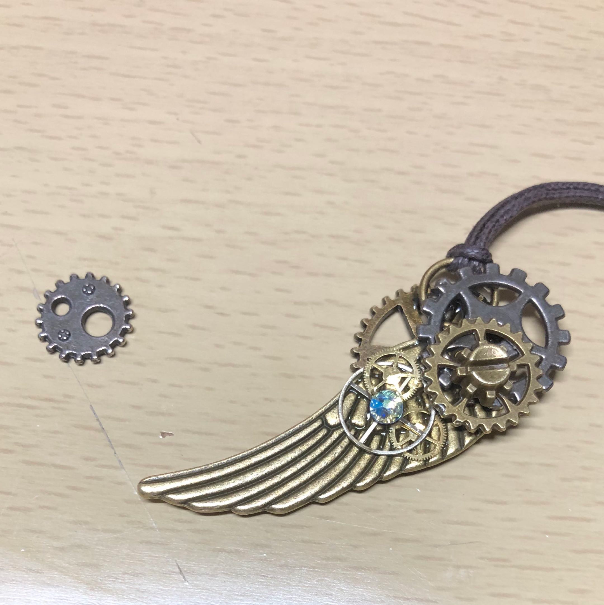

PERSONAL WEBSITE
Hello,
I'm Mituki.
技術系ゴリラです。そうであれ。
Webや動画制作、ゲームとお絵描き、Live2D、あと面白そうだと思ったすべて。
ABOUT
NAME
みつきどーる
University Student / Game Player / Creator?
みつきどーる、あるいはみつきと申します。
Minecraftマルチでのひょんな出来事からおかみと呼ばれています。
モノづくりが好きです。ゲームと、食べることが好きです。
将来の夢は"最強"のエンジニアになること。
SKILLS
HTML / CSS
Webサイト制作
Programming
プログラミング・開発
Video Editing
動画編集・映像制作
Minecraft
建築・企画・マップ制作
Live2D
素体作成・モデリング
HOBBY
Other Game
最もやりこんだゲームはどう考えてもMinecraft、ただし測定のしようがない。
次点でSplatoon3、2000時間
その次が遊戯王MD、700時間
Satisfactory、600時間
Minecraftはサークル「TNTLaboratory」にも入ったり。
多分遊戯王MDよりアークナイツのプレイ時間が長い。そんな感じです。
Video Editing
動画を形にするのが好きです。
Gadget
カメラ(Nikon D5600, iPhone)で月や星を撮ります。
聴覚過敏から守ってくれるヘッドフォン・イヤホンを常に探しています。
(現在使用しているのはATH-GDL3, Soundcore Space A40)
Drawing / Rigging
絵をずっと描いています。
上達は遅いです。描きたいものばかり描きます。
Live2Dのモデルが一応作れます。
FAVORITES
ものづくり
プログラム、動画、Web、絵など。
過去には木工、レジン、塗装などなど。環境的に難しい……
とりあえず「作れそう」と思ったら作ってみます。
ゲーム
Minecraft、Splatoon、遊戯王、Sky、
Satisfactory、アークナイツ、モンスターハンター(World~)など。
あとSteamのたくさんのゲームたち。
過去にはグリムノーツが大好きでした。
アークナイツ
エクシア、ロスモンティス、エイヤフィヤトラ、ケルシー、ハルカが大好き。
生息演算と危機契約が好きな2023年開始ドクター。
危機契約＃４「弧光」では補助のみで470等級まで行って行き倒れました。
再建画策も好きでした。
ごはん
小食ゆえに、おいしいものを食べれるだけ食べるのが好きです。
料理するのも好きですが、近々ライフスタイルが変わる可能性大……
音楽
Orangestar、cosMo@暴走P、ヨルシカ、月詠み、sasakure.UK
いずれもにわかレベル。
GALLERY






